As with all lab reports, your answers will either take the form of R functions or short written responses (submitted together in a Word document). The R functions should be stored in an R script file (‘.R’ extension). To allow me to evaluate your work more efficiently, please name your R script using the following convention: “[your first name]_[your last name]_lab4.R“. So my submission would be”kevin_shoemaker_lab4.R“. The name of your Word docuement doesn’t matter, as long as you submit via WebCampus.
Please submit the R script and the Word document via WebCampus by midnight on the due date (one week after the final lab session allocated for this topic – here, Nov. 21, 2018). You can work in groups but please submit the materials individually.
First, take a little time to review the Bayesian lecture and MCMC lecture!
Lab 4 is due before midnight on Tuesday November 21
NOTE: thanks to Dr. Elizabeth Hunter (formerly a postdoc in the Applied Population Ecology lab) for putting together much of this lab!
If you haven’t already installed JAGS on your computer, use this link
In this lab we will be applying a Bayesian approach to model fitting using the same myxomatosis dataset and model that we used in the previous likelihood lab. To do this, we’ll be using the program JAGS (Just Another Gibbs Sampler).
JAGS runs seamlessly with R, if you download the “R2jags” package or the “jagsUI” package! JAGS is not the only way to do Bayesian analyses, nor is it the only implementation of the BUGS (Bayesian inference Using Gibbs Sampler) language. Others that you may have heard of include WinBUGS and OpenBUGS. STAN is another widely used software for Bayesian inference, that doesn’t use the BUGS language…
To familiarize ourselves with the BUGS language, let’s look at some BUGS code (for our favorite myxomatosis dataset).
#############
# sample BUGS code
model {
#############
# LIKELIHOOD
############
for(obs in 1:n.observations){
titer[obs] ~ dgamma(shape,rate)
}
#############
# PRIORS
############
shape ~ dgamma(0.01,0.01)
scale ~ dgamma(0.001,0.001)
rate <- 1/scale # in BUGS, gamma distribution needs a "rate" parameter rather than a scale
}
The syntax in BUGS/JAGS is very similar to R, but there are a few key differences. Most important, assignment must always be done by the arrow (<-) instead of an equals sign for deterministic functions and the tilde (~) is used to define stochastic processes.
In the model code, you must also specify your priors. Here we are using relatively vague priors, meaning that the probability is spread out fairly evenly over parameter space. The Gamma distribution is always parameterized as shape and rate in BUGS (rate = 1/scale). If you wanted to see what this distribution looked like, you could plot in R (‘dgamma()’ allows you to specify a rate or a scale parameter):
par(mfrow=c(2,1))
curve(dgamma(x, shape=0.01, rate=0.01),3,100,ylim=c(0,0.1),xlab="shape parameter",ylab="probability density", main="Prior")
curve(dgamma(x, shape=0.001, rate=0.001),0.01,0.5,ylim=c(0,1),xlab="scale parameter",ylab="probability density")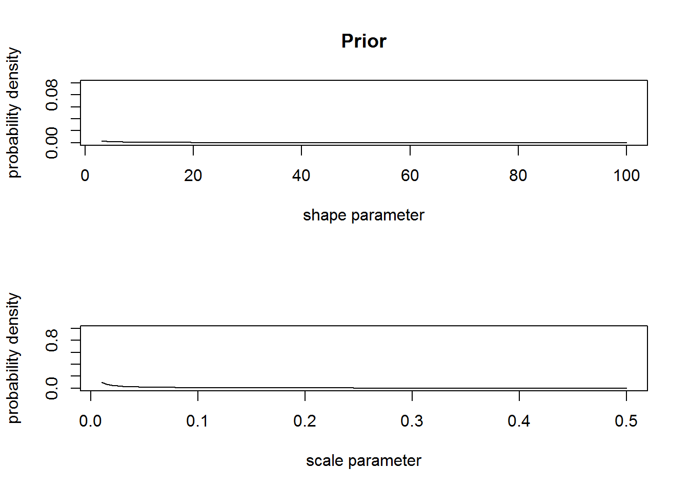
In this case we want a prior distribution that has little to no information about which values of the parameter are most probable. These distributions have no peaks within the range of parameter space of interest, and the probability for any particular x-value is very low, so it does a fairly good job of representing a vague prior for the shape and rate parameters.
We can use the R2JAGS package in R to run JAGS through R and have the output returned to R so that we can analyze and manipulate it further.
First, install and load the R2jags package. While you’re at it, install and load the coda package, which has some great utilities for visualizing and working with MCMC data.
### load key packages for running Bayesian analysis in JAGS
library(R2jags)## Loading required package: rjags## Loading required package: coda## Linked to JAGS 4.2.0## Loaded modules: basemod,bugs##
## Attaching package: 'R2jags'## The following object is masked from 'package:coda':
##
## traceplotlibrary(coda)We can use the ‘cat’ function in R to write out a text file- it can be useful to use this functionality to embed the JAGS code within our R script!
filename <- "BUGSmodel.txt"
cat("
model {
#############
# LIKELIHOOD
############
for(obs in 1:n.observations){
titer[obs] ~ dgamma(shape,rate)
}
#############
# PRIORS
############
shape ~ dgamma(0.01,0.01)
scale ~ dgamma(0.001,0.001)
rate <- 1/scale
}
",file=filename
)We will need to tell BUGS/JAGS what the data are. To be read into JAGS (via the R2JAGS package), the data need to be bundled together in a list. The data need to have the same names as specified in the model file:
First we get the data we want into R (we know the drill!):
library(emdbook)
MyxDat <- MyxoTiter_sum
Myx <- subset(MyxDat,grade==1) #Data set from grade 1 of myxo data
head(Myx)## grade day titer
## 1 1 2 5.207
## 2 1 2 5.734
## 3 1 2 6.613
## 4 1 3 5.997
## 5 1 3 6.612
## 6 1 3 6.810Then we package the data as a list, which is what JAGS wants!
myx.data.for.bugs <- list(
titer = Myx$titer,
n.observations = length(Myx$titer)
)
myx.data.for.bugs## $titer
## [1] 5.207 5.734 6.613 5.997 6.612 6.810 5.930 6.501 7.182 7.292 7.819
## [12] 7.489 6.918 6.808 6.235 6.916 4.196 7.682 8.189 7.707 7.597 7.112
## [23] 7.354 7.158 7.466 7.927 8.499
##
## $n.observations
## [1] 27init.vals.for.bugs <- function(){
list(
shape=runif(1,20,100),
scale=runif(1,0.05,0.3)
)
}
init.vals.for.bugs()## $shape
## [1] 21.75969
##
## $scale
## [1] 0.1841536init.vals.for.bugs()## $shape
## [1] 75.07833
##
## $scale
## [1] 0.2878559Alternatively, we can specify exact initial values for our chains (in this case, we initialize three Markov chains)
inits = list(list(shape=90,scale=0.1), list(shape=50,scale=0.2), list(shape=150,scale=0.04)) # a list of lists!Note that we need three different sets of starting values here because we are running three different chains. Recall that initial values are required, and you may want to use the same tricks as we have used before (e.g., method of moments) to identify reasonable starting values. JAGS will not work if you specify unreasonable initial parameters (and it won’t necessarily tell you that is the problem).
Now we’ll run this model through JAGS:
params.to.store <- c("shape","scale") # specify the parameters we want to get the posteriors for
jags.fit <- jags(data=myx.data.for.bugs,inits=init.vals.for.bugs,parameters.to.save=params.to.store,n.iter=50000,model.file="BUGSmodel.txt",n.chains = 3,n.burnin = 5000,n.thin = 20 )## module glm loaded## Compiling model graph
## Resolving undeclared variables
## Allocating nodes
## Graph information:
## Observed stochastic nodes: 27
## Unobserved stochastic nodes: 2
## Total graph size: 37
##
## Initializing modeljags.fit## Inference for Bugs model at "BUGSmodel.txt", fit using jags,
## 3 chains, each with 50000 iterations (first 5000 discarded), n.thin = 20
## n.sims = 6750 iterations saved
## mu.vect sd.vect 2.5% 25% 50% 75% 97.5% Rhat n.eff
## scale 0.163 0.047 0.092 0.130 0.156 0.188 0.273 1.008 310
## shape 45.927 12.697 25.359 36.843 44.531 53.218 75.263 1.008 310
## deviance 77.433 2.033 75.381 75.953 76.822 78.251 82.729 1.006 570
##
## For each parameter, n.eff is a crude measure of effective sample size,
## and Rhat is the potential scale reduction factor (at convergence, Rhat=1).
##
## DIC info (using the rule, pD = var(deviance)/2)
## pD = 2.1 and DIC = 79.5
## DIC is an estimate of expected predictive error (lower deviance is better).For each parameter, n.eff is a crude measure of effective sample size, and Rhat is the potential scale reduction factor (at convergence, Rhat=1).
DIC info (using the rule, pD = Dbar-Dhat) pD = 3.0 and DIC = 65.3 DIC is an estimate of expected predictive error (lower deviance is better).
You can see the means and variance for the parameters as well as the DIC for the model. We can summarize these in plots of the posterior distributions. First, we define the MCMC output as a ‘coda’ object (for storing, visualizing and analyzing MCMC results) that R knows how to work with.
jagsfit.mcmc <- as.mcmc(jags.fit) # convert to "MCMC" object (coda package)
summary(jagsfit.mcmc)##
## Iterations = 5001:49981
## Thinning interval = 20
## Number of chains = 3
## Sample size per chain = 2250
##
## 1. Empirical mean and standard deviation for each variable,
## plus standard error of the mean:
##
## Mean SD Naive SE Time-series SE
## deviance 77.4325 2.03261 0.0247401 0.051262
## scale 0.1629 0.04717 0.0005741 0.002051
## shape 45.9274 12.69736 0.1545474 0.585941
##
## 2. Quantiles for each variable:
##
## 2.5% 25% 50% 75% 97.5%
## deviance 75.38071 75.9528 76.8218 78.2511 82.7285
## scale 0.09235 0.1297 0.1559 0.1883 0.2725
## shape 25.35857 36.8431 44.5312 53.2182 75.2633plot(jagsfit.mcmc)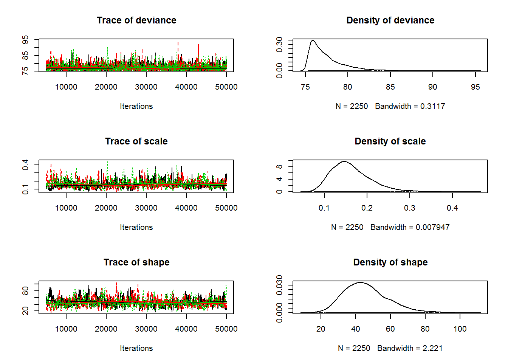
library(lattice)
densityplot(jagsfit.mcmc)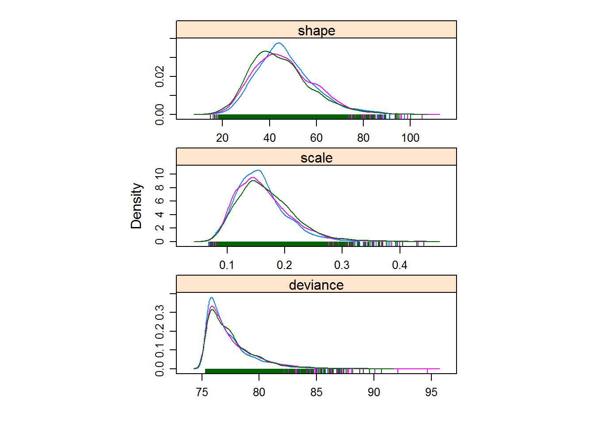
You can visually check for convergence here, using the trace plots – a converged run will look like white noise and the samples will not be hitting any ceilings or floors.
We can estimate the 95% credible interval by calling directly from the bugs output. The “sims.list” part of the output has all of the MCMC samples that were created during the run.
shape95 = quantile(jags.fit$BUGSoutput$sims.list$shape,c(0.025,0.975))
scale95 = quantile(jags.fit$BUGSoutput$sims.list$scale,c(0.025,0.975))
shape95## 2.5% 97.5%
## 25.35857 75.26332scale95## 2.5% 97.5%
## 0.09235442 0.27253294The probability that the a parameter is between these 2 numbers is actually 95%!
So, what’s so great about this? Using a vague prior, we get almost the exact same parameter estimates that we did when we just did a straight up likelihood model. This is usually the case with simple models like the run we ran here. However, answers can be quite different with more complicated models, and in fact the Bayesian approach allows us to simultaneously fit complex models that we could not do effectively using likelihood-based approaches.
That said, there are 2 main advantages to the Bayesian approach, both having to do with the fact that the answer comes in the form of a probability distribution instead of a point estimate.
First, the credible interval is much nicer to interpret than a confidence interval. There’s none of this “given that the null hypothesis is true, and we were to resample the data 100 times…”. You can state simply that there’s a 95% probability that the value of the parameter lies within the credible interval. Period.
Second, and more importantly from a pragmatic standpoint (i.e., for running simulations), you can draw from these parameter probability distributions to create simulations that include the full variability of outcomes instead of just point estimates, which will demonstrate the implications of your parameter estimates (e.g. under different management scenarios, climate change, etc.). We’ll explore how to do this a little later.
Exercise 1a. Write a function called “Myx_Ricker_JAGS()” that runs the Myxomatosis/Ricker example from the previous (likelihood) lab in JAGS. Recall that we are modeling titer levels (grade 1 only) as a function of the days since infection. Submit this function as part of your R script.
Here is an example of the results you should expect to see when running your new function:
Ricker_results <- Myx_Ricker_JAGS(data=Myx[,-1],JAGScode="BUGSmodel_ricker.txt",CImethod="HPD",CIlevel=0.88)## Compiling model graph
## Resolving undeclared variables
## Allocating nodes
## Graph information:
## Observed stochastic nodes: 27
## Unobserved stochastic nodes: 3
## Total graph size: 124
##
## Initializing model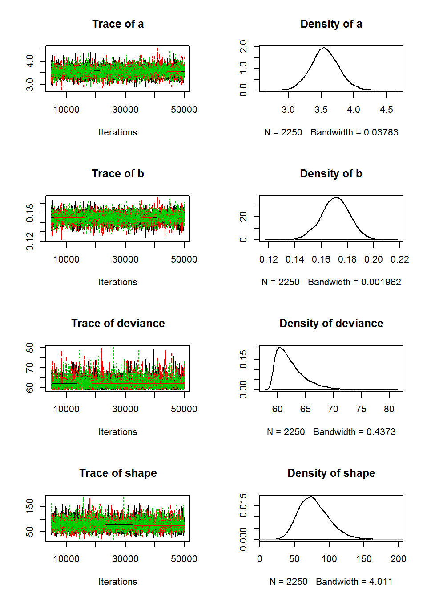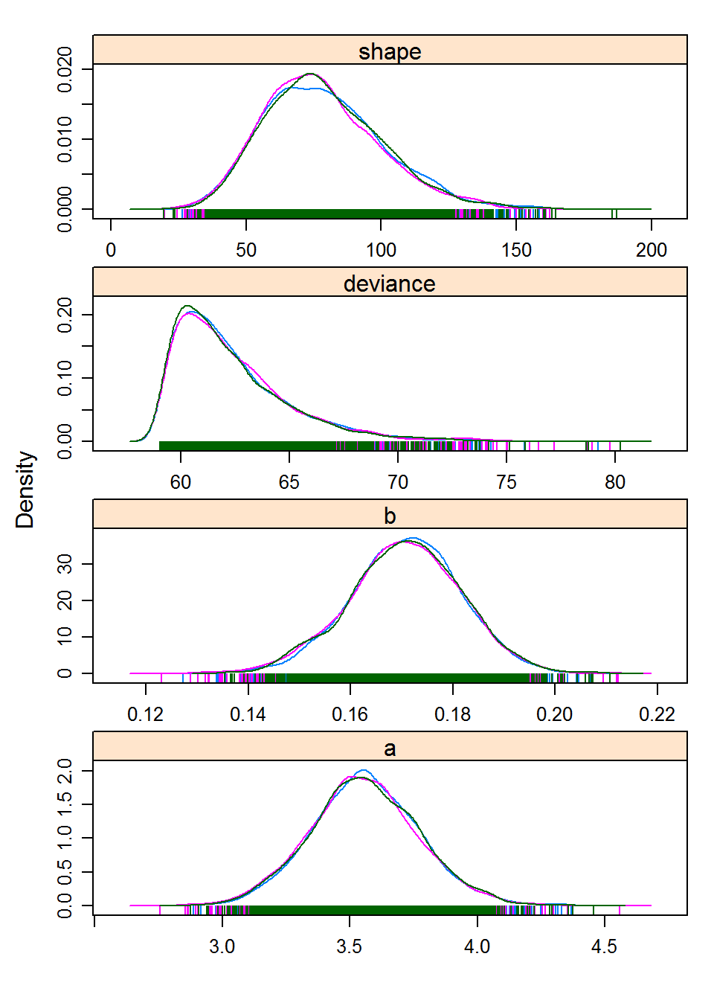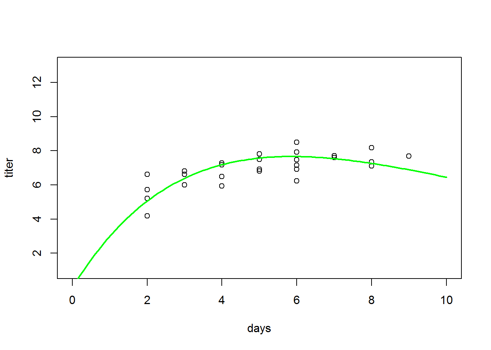
Ricker_results## [[1]]
## [1] 3.5580664 0.1706747 78.5045677
##
## [[2]]
## a b shape
## [1,] 3.228456 0.1525693 44.14921
## [2,] 3.892765 0.1869516 110.22154
##
## [[3]]
## [1] 1.001319Ricker_results <- Myx_Ricker_JAGS(data=Myx[,-1],JAGScode="BUGSmodel_ricker.txt",CImethod="quantile",CIlevel=0.88)## Compiling model graph
## Resolving undeclared variables
## Allocating nodes
## Graph information:
## Observed stochastic nodes: 27
## Unobserved stochastic nodes: 3
## Total graph size: 124
##
## Initializing model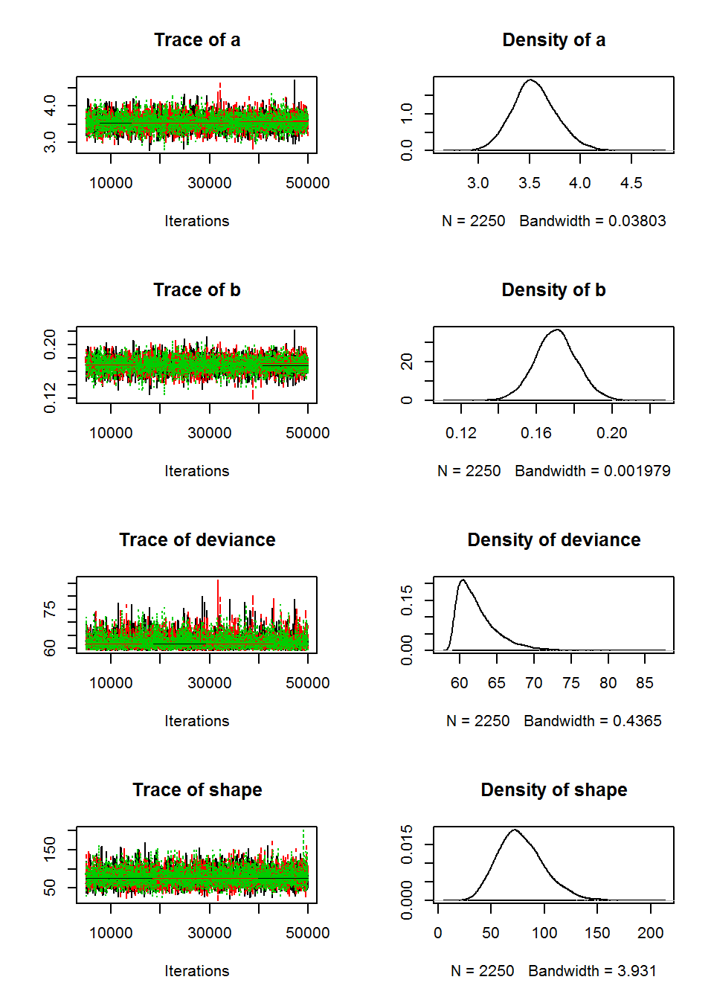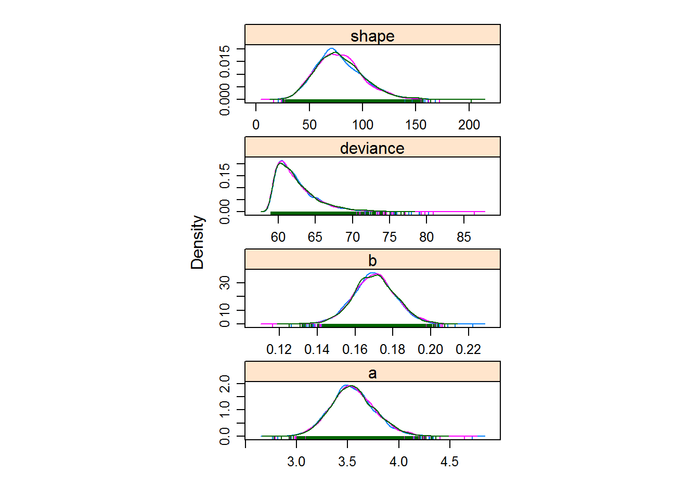
Ricker_results## [[1]]
## [1] 3.5495460 0.1702083 78.2604368
##
## [[2]]
## a b shape
## [1,] 3.225543 0.1530670 46.92557
## [2,] 3.897321 0.1877525 115.82354
##
## [[3]]
## [1] 1.000541Exercise 1b. Can you identify any differences between the parameter estimates from the analysis in a likelihood vs Bayesian perspective? Compare your results from Lab 3, and briefly describe your findings in your Word document.
Exercise 1c. Did your MCMC chains converge on the joint posterior distribution? Briefly explain your reasoning in your Word document! Use several lines of reasoning!
Recalling our plot (from the last lab) of the Ricker function with the maximum-likelihood parameter estimates drawn over the scatterplot of titers by day, there really isn’t much evidence in the data for that downward turn in the function after day 6. We chose a model that indicated decline in titer levels following a peak based on the behavior of other myxomytosis grades, but given the virulence of this particular grade most animals die once the titer levels reach their maximum. Might it be more appropriate to fit a model that levels off at some asymptote instead of declining following the peak? Let’s find out, using a little Bayesian model selection!
And here is some test commands with output:
MM_results <- Myx_MM_JAGS(data=Myx[,-1],JAGScode="BUGSmodel_mm.txt",CImethod="HPD",CIlevel=0.88)## Compiling model graph
## Resolving undeclared variables
## Allocating nodes
## Graph information:
## Observed stochastic nodes: 27
## Unobserved stochastic nodes: 3
## Total graph size: 96
##
## Initializing model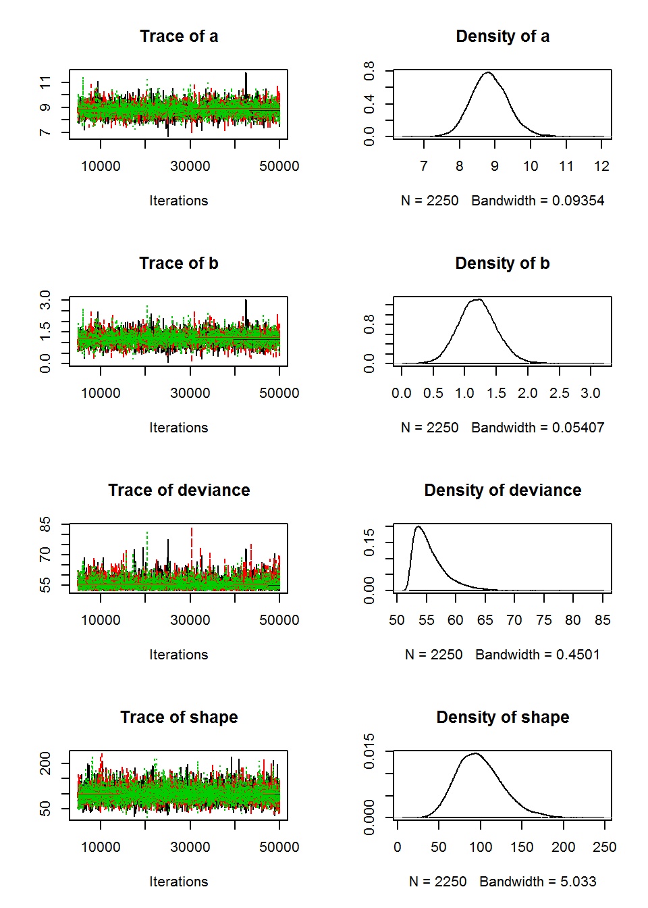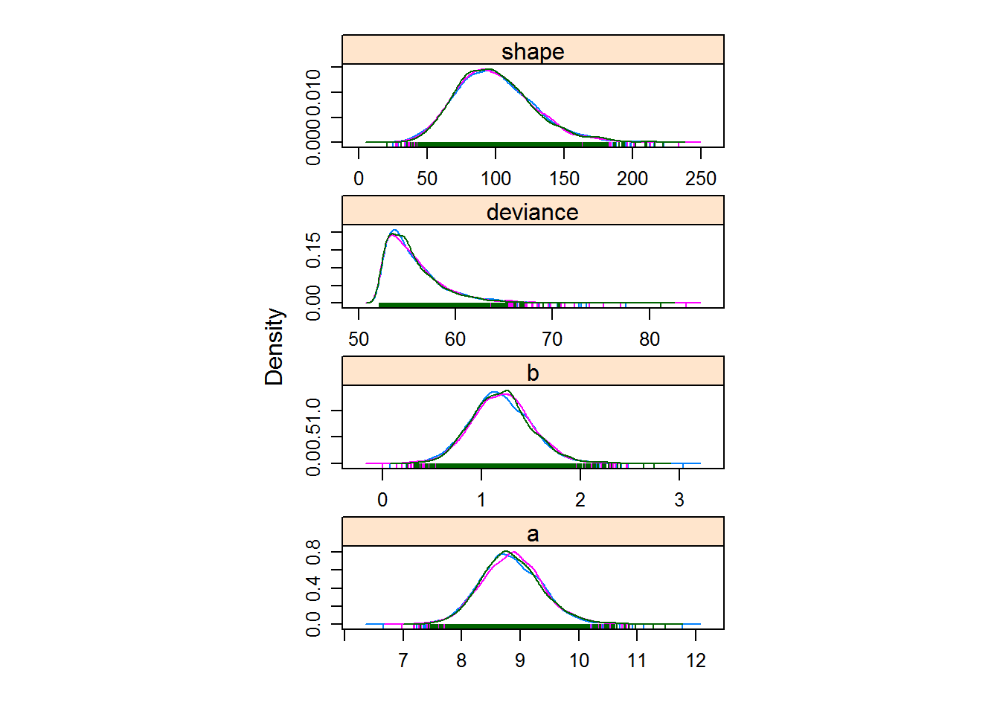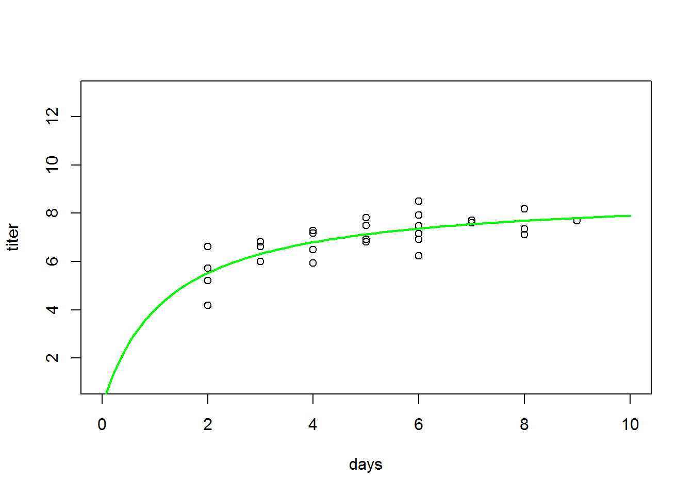
MM_results## [[1]]
## [1] 8.849332 1.202337 99.082658
##
## [[2]]
## a b shape
## [1,] 8.055208 0.7281408 54.09782
## [2,] 9.635765 1.6660165 137.65600
##
## [[3]]
## [1] 1.001333MM_results <- Myx_MM_JAGS(data=Myx[,-1],JAGScode="BUGSmodel_mm.txt",CImethod="quantile",CIlevel=0.88)## Compiling model graph
## Resolving undeclared variables
## Allocating nodes
## Graph information:
## Observed stochastic nodes: 27
## Unobserved stochastic nodes: 3
## Total graph size: 96
##
## Initializing model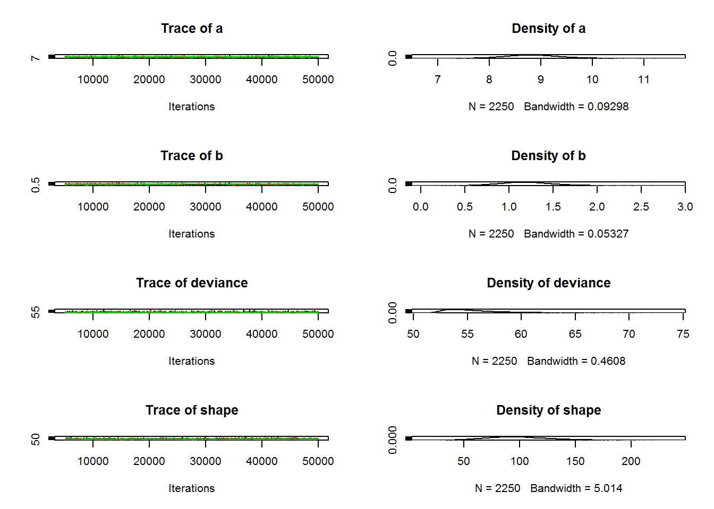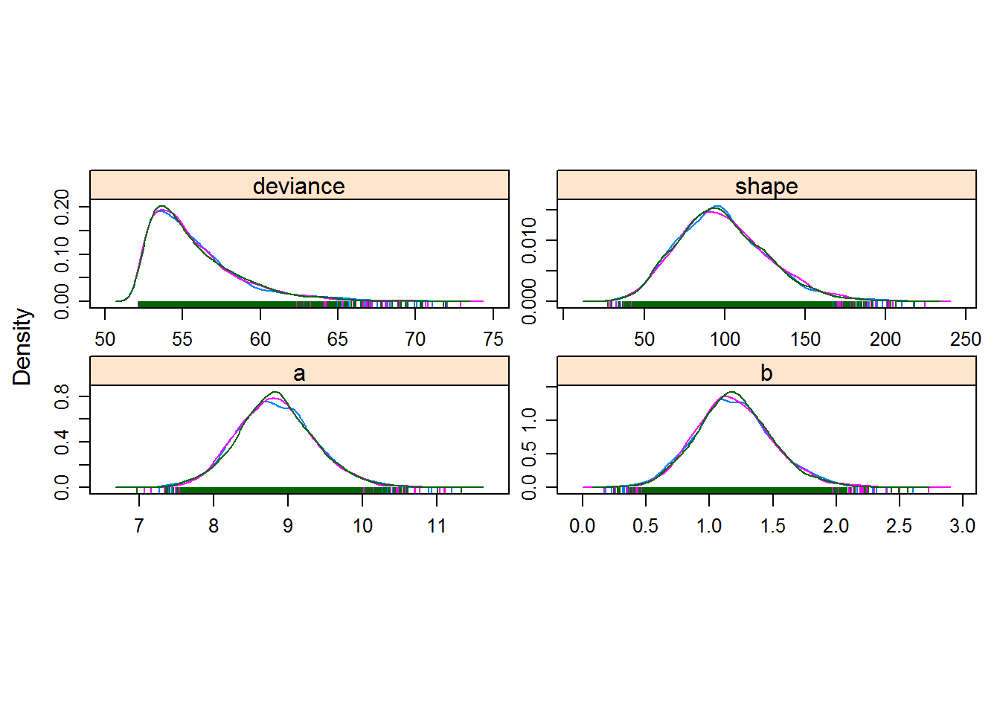
MM_results## [[1]]
## [1] 8.842838 1.196076 98.771297
##
## [[2]]
## a b shape
## [1,] 8.066653 0.7399619 59.12982
## [2,] 9.683495 1.6991870 145.05708
##
## [[3]]
## [1] 1.002458The M-M function looks like this:
\(\frac{a\cdot x}{b+x}\)
mm = function(x,a,b) { a*x / (b+x) }You can plot an M-M function over the points to get some initial parameter estimates.
plot(Myx$titer~Myx$day,xlim=c(0,10),ylim=c(0,10))
curve(mm(x,a=5,b=0.8),from=0,to=10,add=T,col="red",lwd=2)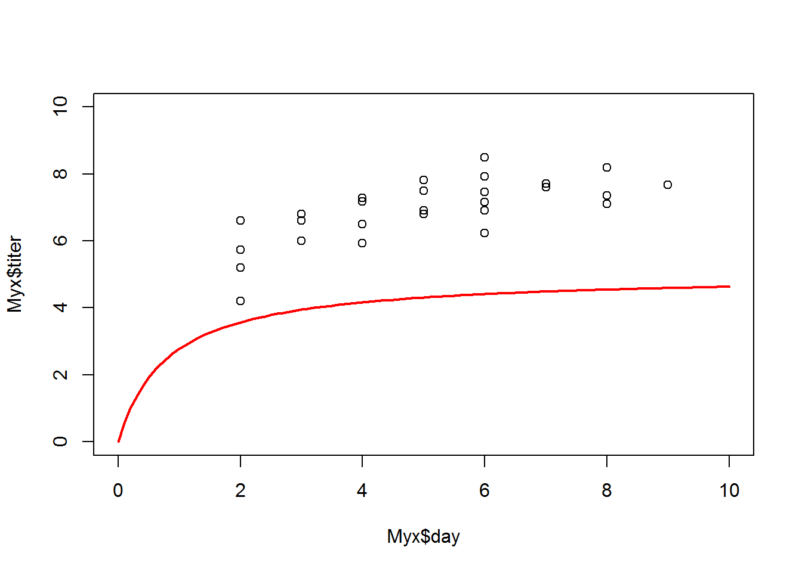
And here is an example of what your figure should look like with the best-fit M-M and Ricker functions overlaid on the same plot:
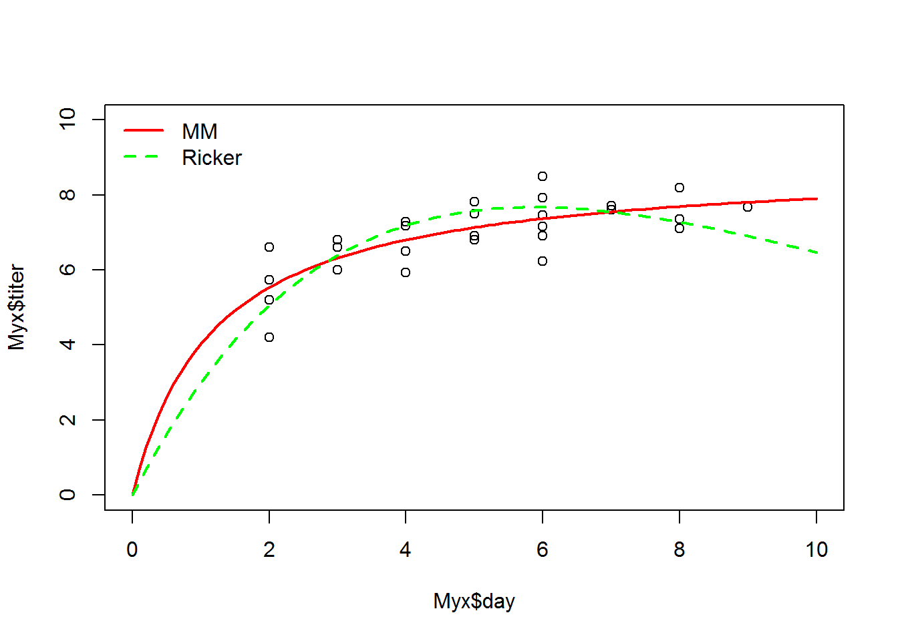
Let’s try a different approach for visualizing the goodness-of-fit of these two models. For each of these models, use the pseudocode provided below to evaluate goodness-of-fit. On the basis of a posterior predictive check (see below), how well would you say each model fits the observed data? Do you see any red flags that would indicate poor goodness of fit? Explain your reasoning.
Exercise 3a. Write a function called “Myx_PostPredCheck()” that compares the goodness-of-fit for the two models (ricker vs M-M) using a posterior predictive check.
new.draw <- jags.fit$BUGSoutput$sims.list$a[random_index]## Compiling model graph
## Resolving undeclared variables
## Allocating nodes
## Graph information:
## Observed stochastic nodes: 27
## Unobserved stochastic nodes: 3
## Total graph size: 124
##
## Initializing model## Compiling model graph
## Resolving undeclared variables
## Allocating nodes
## Graph information:
## Observed stochastic nodes: 27
## Unobserved stochastic nodes: 3
## Total graph size: 96
##
## Initializing modelAnd here is what the results of your function should look like!
####
# Test the function
test <- Myx_PostPredCheck(MCMC1=jags.fit_ricker,MCMC2=jags.fit_mm)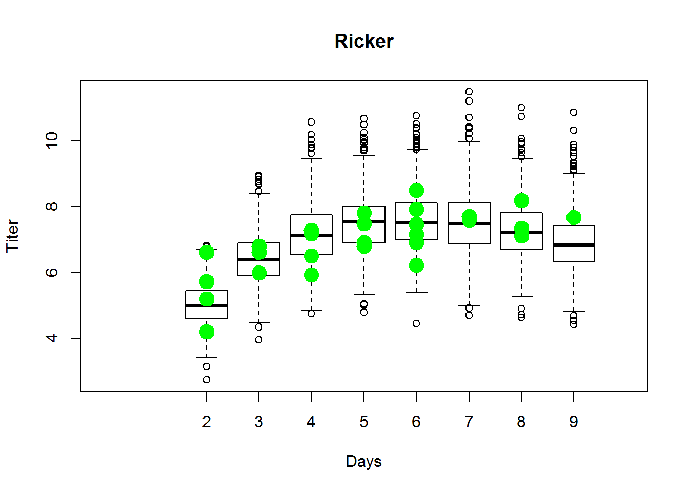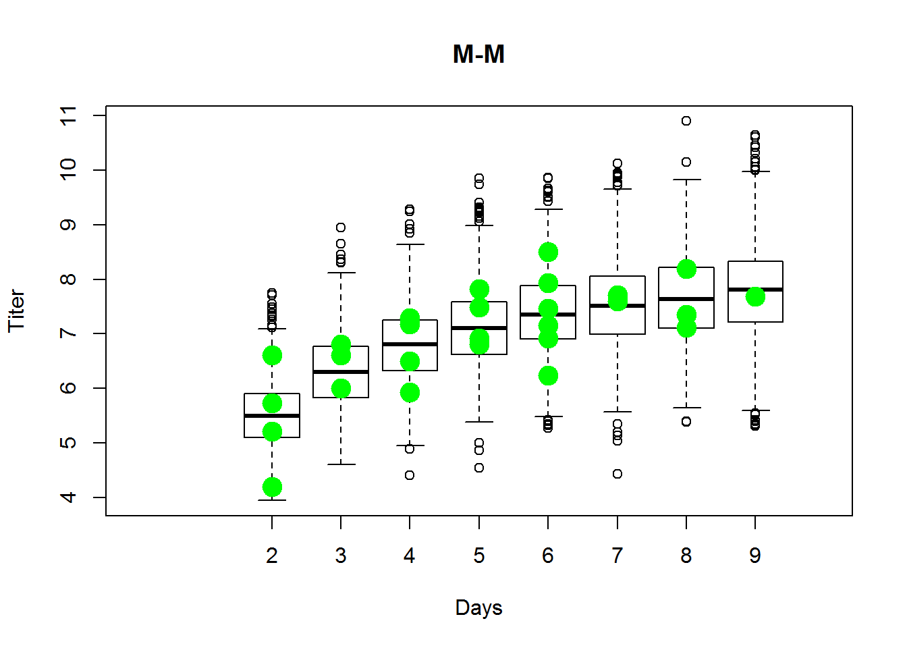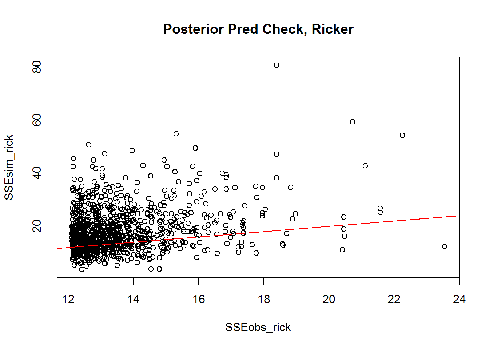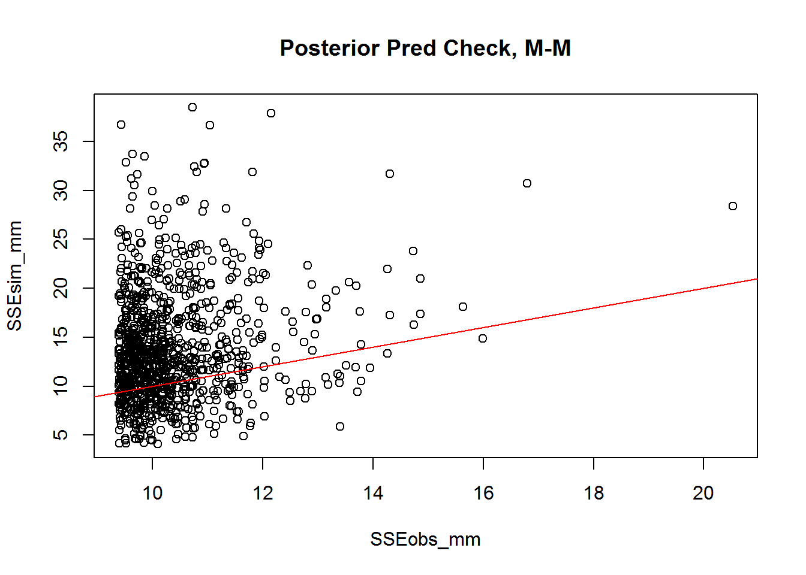
test[[1]] # p-vals## [1] 0.705 0.710head(test[[2]]) # ppc for ricker## a b shape SSEsim SSEobs
## 1 3.311911 0.1590790 51.76648 31.18700 12.28114
## 2 3.478372 0.1616519 79.73983 16.12649 14.01299
## 3 3.576797 0.1757514 101.09944 13.10784 12.73049
## 4 3.853098 0.1855804 55.19437 22.32965 14.01064
## 5 3.313795 0.1653687 76.79057 12.44802 13.39743
## 6 3.143208 0.1518573 59.65199 18.92697 13.00441head(test[[3]]) # ppc for M-M## a b shape SSEsim SSEobs
## 1 9.022282 1.2210385 85.42037 25.634696 9.758478
## 2 8.694518 1.1180557 82.83445 15.750999 9.425513
## 3 8.558200 1.1301919 89.51961 8.126173 9.961551
## 4 8.285284 0.9114658 75.59386 13.406036 10.106081
## 5 8.320498 0.8453829 114.09760 12.620531 10.082585
## 6 8.087020 0.8994628 98.43096 12.884267 11.573921DIC (analogous to AIC) is a model selection criterion for Baysian models fitted with MCMC. Just like for AIC, models with smaller values of DIC are favored. Which model (M-M or Ricker) is the better model based on DIC? What does the difference in DIC mean in terms of the strength of evidence in support of one of these models as the “best model”? [You should be aware that DIC is not a perfect solution for Bayesian model selection. For one, it is only valid if the posterior is approximately multivariate normal. Also, DIC tends to select overfitted models!]
WAIC (also analogous to AIC) is a newer (and better) model selection criterion for Baysian models fitted with MCMC. Just like for AIC, models with smaller values of WAIC are favored. Which model (M-M or Ricker) is the better model based on WAIC? What does the difference in WAIC mean in terms of the strength of evidence in support of one of these models as the “best model”?
## This is loo version 2.0.0.
## **NOTE: As of version 2.0.0 loo defaults to 1 core but we recommend using as many as possible. Use the 'cores' argument or set options(mc.cores = NUM_CORES) for an entire session. Visit mc-stan.org/loo/news for details on other changes.## Warning: 1 (3.7%) p_waic estimates greater than 0.4. We recommend trying
## loo instead.## Warning: 2 (7.4%) p_waic estimates greater than 0.4. We recommend trying
## loo instead.Here are the results I got:
DIC_ricker## [1] 66.2235DIC_MM## [1] 59.70527WAIC_ricker$estimates["waic",]## Estimate SE
## 66.159879 8.548989WAIC_mm$estimates["waic",]## Estimate SE
## 59.865573 9.141202